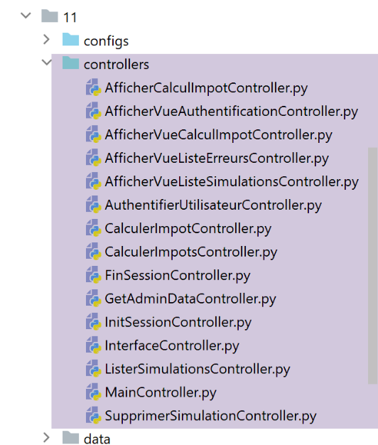
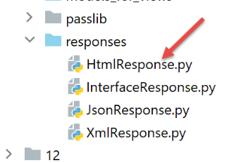
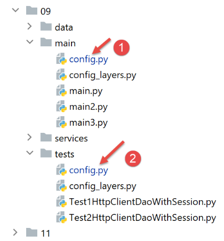

36. Esercizio pratico: versione 16

36.1. Introduzione
I URL della nostra applicazione hanno attualmente la forma [/action/param1/param2/…]. Vorremmo poter aggiungere un prefisso a questi URL. Ad esempio, con il prefisso [/do], avremmo dei URL della forma [/do/action/param1/param2/…].
36.2. La nuova configurazione delle rotte

- in [2], il calcolo dei percorsi verrà modificato;
- in [1], il file [config] viene modificato per riflettere tale cambiamento;
La configurazione [config] diventa la seguente:
def configure(config: dict) -> dict:
# configurazione del syspath
import syspath
config['syspath'] = syspath.configure(config)
# configurazione dell'applicazione
import parameters
config['parameters'] = parameters.configure(config)
# configurazione del database
import database
config["database"] = database.configure(config)
# istanziazione dei livelli dell'applicazione
import layers
config['layers'] = layers.configure(config)
# configurazione MVC del livello [web]
config['mvc'] = {}
# configurazione dei controller del livello [web]
import controllers
config['mvc'].update(controllers.configure(config))
# azioni ASV (Azione Mostra vista)
import asv_actions
config['mvc'].update(asv_actions.configure(config))
# azioni ADS (Azione "Do Something")
import ads_actions
config['mvc'].update(ads_actions.configure(config))
# configurazione delle risposte HTTP
import responses
config['mvc'].update(responses.configure(config))
# configurazione delle rotte
import routes
routes.configure(config)
# si applica la configurazione
return config
- righe 37-39: il modulo [routes] (riga 38) si occupa di configurare i percorsi (riga 39);
Il file delle rotte senza token CSRF [configs/routes_without_csrftoken] viene modificato come segue:
# dipendenze
from flask import redirect, request, session, url_for
from flask_api import status
# configurazione dell'applicazione
config = {}
# il front controller
def front_controller() -> tuple:
# si inoltra la richiesta al controller principale
main_controller = config['mvc']['controllers']['main-controller']
return main_controller.execute(request, session, config)
# radice dell'applicazione
def index() -> tuple:
# reindirizzamento a /init-session/html
return redirect(url_for("init_session", type_response="html"), status.HTTP_302_FOUND)
# init-session
def init_session(type_response: str) -> tuple:
# si esegue il controller associato all'azione
return front_controller()
# autenticazione-utente
def authentifier_utilisateur() -> tuple:
# si esegue il controller associato all'azione
return front_controller()
# calcolo-imposta
def calculer_impot() -> tuple:
# si esegue il controller associato all'azione
return front_controller()
…
Il file è stato ripulito dai percorsi. Rimangono solo le funzioni ad essi associate.
Lo stesso destino tocca ai file delle rotte con token CSRF e [configs/routes_with_csrftoken]:
# dipendenze
from flask import redirect, request, session, url_for
from flask_api import status
from flask_wtf.csrf import generate_csrf
# configurazione
config = {}
# il front controller
def front_controller() -> tuple:
# la richiesta viene inoltrata al controller principale
main_controller = config['mvc']['controllers']['main-controller']
return main_controller.execute(request, session, config)
# radice dell'applicazione
def index() -> tuple:
# reindirizzamento a /init-session/html
return redirect(url_for("init_session", type_response="html", csrf_token=generate_csrf()), status.HTTP_302_FOUND)
# init-session
def init_session(type_response: str, csrf_token: str) -> tuple:
# si esegue il controller associato all'azione
return front_controller()
# autenticazione utente
def authentifier_utilisateur(csrf_token: str) -> tuple:
# viene eseguito il controller associato all'azione
return front_controller()
…
# init-session-without-csrftoken per i client json e xml
def init_session_without_csrftoken(type_response: str) -> tuple:
# reindirizzamento a /init-session/type_response
return redirect(url_for("init_session", type_response=type_response, csrf_token=generate_csrf()),
status.HTTP_302_FOUND)
I percorsi vengono calcolati dal seguente modulo [configs/routes]:
from flask import Flask
def configure(config: dict):
# configurazione delle rotte
# applicazione Flask
app = Flask(__name__, template_folder="../flask/templates", static_folder="../flask/static")
config['app'] = app
# importazione delle route dell'applicazione web
if config['parameters']['with_csrftoken']:
import routes_with_csrftoken as routes
else:
import routes_without_csrftoken as routes
# si inserisce la configurazione nelle rotte
routes.config = config
# il prefisso delle URL dell'applicazione
prefix_url = config["parameters"]["prefix_url"]
# token CSRF
with_csrftoken = config["parameters"]['with_csrftoken']
if with_csrftoken:
csrftoken_param = f"/<string:csrf_token>"
else:
csrftoken_param = ""
# le route dell'applicazione Flask
# radice dell'applicazione
app.add_url_rule(f'{prefix_url}/', methods=['GET'],
view_func=routes.index)
# init-session
app.add_url_rule(f'{prefix_url}/init-session/<string:type_response>{csrftoken_param}', methods=['GET'],
view_func=routes.init_session)
# inizializzazione-sessione-senza-csrftoken
if with_csrftoken:
app.add_url_rule(f'{prefix_url}/init-session-without-csrftoken/<string:type_response>',
methods=['GET'],
view_func=routes.init_session_without_csrftoken)
# autenticare-utente
app.add_url_rule(f'{prefix_url}/authentifier-utilisateur{csrftoken_param}', methods=['POST'],
view_func=routes.authentifier_utilisateur)
# calcolo-imposta
app.add_url_rule(f'{prefix_url}/calculer-impot{csrftoken_param}', methods=['POST'],
view_func=routes.calculer_impot)
# calcolo dell'imposta in batch
app.add_url_rule(f'{prefix_url}/calculer-impots{csrftoken_param}', methods=['POST'],
view_func=routes.calculer_impots)
# elenco-simulazioni
app.add_url_rule(f'{prefix_url}/lister-simulations{csrftoken_param}', methods=['GET'],
view_func=routes.lister_simulations)
# eliminare-simulazione
app.add_url_rule(f'{prefix_url}/supprimer-simulation/<int:numero>{csrftoken_param}', methods=['GET'],
view_func=routes.supprimer_simulation)
# fine-sessione
app.add_url_rule(f'{prefix_url}/fin-session{csrftoken_param}', methods=['GET'],
view_func=routes.fin_session)
# visualizza-calcolo-imposta
app.add_url_rule(f'{prefix_url}/afficher-calcul-impot{csrftoken_param}', methods=['GET'],
view_func=routes.afficher_calcul_impot)
# recupera-dati-amministratore
app.add_url_rule(f'{prefix_url}/get-admindata{csrftoken_param}', methods=['GET'],
view_func=routes.get_admindata)
# visualizza-panoramica-calcolo-imposte
app.add_url_rule(f'{prefix_url}/afficher-vue-calcul-impot{csrftoken_param}', methods=['GET'],
view_func=routes.afficher_vue_calcul_impot)
# visualizza-pagina-autenticazione
app.add_url_rule(f'{prefix_url}/afficher-vue-authentification{csrftoken_param}', methods=['GET'],
view_func=routes.afficher_vue_authentification)
# visualizza-pagina-elenco-simulazioni
app.add_url_rule(f'{prefix_url}/afficher-vue-liste-simulations{csrftoken_param}', methods=['GET'],
view_func=routes.afficher_vue_liste_simulations)
# visualizza-vista-elenco_errori
app.add_url_rule(f'{prefix_url}/afficher-vue-liste-erreurs{csrftoken_param}', methods=['GET'],
view_func=routes.afficher_vue_liste_erreurs)
# caso particolare
if with_csrftoken:
# inizializza-sessione-senza-csrftoken per i client json e xml
app.add_url_rule(f'{prefix_url}/init-session-without-csrftoken', methods=['GET'],
view_func=routes.init_session_without_csrftoken)
- righe 6-8: viene creata l'applicazione Flask e inserita nella configurazione;
- righe 10-14: si importa il file delle route adatto alla situazione. Ricordiamo che il file importato è in realtà privo di route. Contiene solo le funzioni ad esse associate;
- riga 17: le funzioni associate alle route devono conoscere la configurazione dell’applicazione;
- riga 20: si nota il prefisso URL. Questo può essere vuoto;
- righe 22-27: le rotte con il token CSRF hanno un parametro in più rispetto a quelle che ne sono prive. Per gestire questa differenza, si utilizza la variabile [csrftoken_param]:
- contiene la stringa vuota se non è presente il token CSRF nelle rotte;
- contiene la stringa [/<string:csrf_token>] se è presente un token CSRF;
- righe 29-96: ogni percorso dell’applicazione è associato a una funzione del file dei percorsi importato alle righe 10-14;
36.3. I nuovi controller

Nella versione precedente, tutti i controller ottenevano l’azione in corso di elaborazione nel modo seguente:
def execute(self, request: LocalProxy, session: LocalProxy, config: dict) -> (dict, int):
# si recuperano gli elementi del percorso
params = request.path.split('/')
action = params[1]
Questo codice non funziona più se è presente un prefisso, ad esempio [/do/lister-simulations]. In questo caso, l’azione alla riga 3 sarebbe [do] e risulterebbe quindi errata.
Si trasforma questo codice nel modo seguente:
def execute(self, request: LocalProxy, session: LocalProxy, config: dict) -> (dict, int):
# si recuperano gli elementi del percorso
prefix_url = config["parameters"]["prefix_url"]
params = request.path[len(prefix_url):].split('/')
action = params[1]
Si procede in questo modo in tutti i controller.
36.4. I nuovi modelli

Nella versione precedente, ogni classe di modello generava un modello nel modo seguente:
def get_model_for_view(self, request: Request, session: LocalProxy, config: dict, résultat: dict) -> dict:
# si incapsulano i dati della pagina nel modello
modèle = {}
# stato dell'applicazione
état = résultat["état"]
# il modello dipende dallo stato
…
# token CSRF
modèle['csrf_token'] = super().get_csrftoken(config)
# azioni possibili dalla vista
modèle['actions_possibles'] = […]
# si restituisce il modello
return modèle
D'ora in poi il modello avrà una chiave aggiuntiva, il prefisso URL:
def get_model_for_view(self, request: Request, session: LocalProxy, config: dict, résultat: dict) -> dict:
# si incapsulano i dati della pagina nel modello
modèle = {}
# stato dell'applicazione
état = résultat["état"]
# il modello dipende dallo stato
…
# token CSRF
modèle['csrf_token'] = super().get_csrftoken(config)
# azioni possibili dalla vista
modèle['actions_possibles'] = […]
# prefisso di URL
modèle["prefix_url"] = config["parameters"]["prefix_url"]
# si restituisce il modello
return modèle
36.5. I nuovi frammenti

Tutti i frammenti contenenti URL devono essere modificati.
Il frammento [v-authentification]
<!-- modulo HTML - si inviano i valori con l'azione [authentifier-utilisateur] -->
<form method="post" action="{{modèle.prefix_url}}/authentifier-utilisateur{{modèle.csrf_token}}">
<!-- titolo -->
<div class="alert alert-primary" role="alert">
<h4>Veuillez vous authentifier</h4>
</div>
…
</form>
Il frammento [v-calcul-impot]
<!-- modulo HTML inviato -->
<form method="post" action="{{modèle.prefix_url}}/calculer-impot{{modèle.csrf_token}}">
<!-- messaggio su 12 colonne su sfondo blu -->
…
</form>
Il frammento [v-liste-simulations]
…
{% if modèle.simulations is defined and modèle.simulations|length!=0 %}
…
<!-- tabella delle simulazioni -->
<table class="table table-sm table-hover table-striped">
…
<tr>
<th scope="row">{{simulation.id}}</th>
<td>{{simulation.marié}}</td>
<td>{{simulation.enfants}}</td>
<td>{{simulation.salaire}}</td>
<td>{{simulation.impôt}}</td>
<td>{{simulation.surcôte}}</td>
<td>{{simulation.décôte}}</td>
<td>{{simulation.réduction}}</td>
<td>{{simulation.taux}}</td>
<td><a href="{{modèle.prefix_url}}/supprimer-simulation/{{simulation.id}}{{modèle.csrf_token}}">Supprimer</a></td>
</tr>
{% endfor %}
</tr>
</tbody>
</table>
{% endif %}
Il frammento [v-menu]
<!-- menu Bootstrap -->
<nav class="nav flex-column">
<!-- visualizzazione di un elenco di link HTML -->
{% for optionMenu in modèle.optionsMenu %}
<a class="nav-link" href="{{modèle.prefix_url}}{{optionMenu.url}}{{modèle.csrf_token}}">{{optionMenu.text}}</a>
{% endfor %}
</nav>
36.6. La nuova risposta HTML

Nella versione precedente il codice della risposta HTML terminava con un reindirizzamento:
class HtmlResponse(InterfaceResponse):
def build_http_response(self, request: LocalProxy, session: LocalProxy, config: dict, status_code: int,
résultat: dict) -> (Response, int):
# la risposta HTML dipende dal codice di stato restituito dal controller
état = résultat["état"]
…
# ora è necessario generare l'URL di reindirizzamento senza dimenticare il token CSRF se richiesto
if config['parameters']['with_csrftoken']:
csrf_token = f"/{generate_csrf()}"
else:
csrf_token = ""
# risposta di reindirizzamento
return redirect(f"{ads['to']}{csrf_token}"), status.HTTP_302_FOUND
Questo codice ora diventa il seguente:
def build_http_response(self, request: LocalProxy, session: LocalProxy, config: dict, status_code: int,
résultat: dict) -> (Response, int):
…
# ora occorre generare il codice di reindirizzamento URL senza dimenticare il token CSRF, se richiesto
if config['parameters']['with_csrftoken']:
csrf_token = f"/{generate_csrf()}"
else:
csrf_token = ""
# risposta di reindirizzamento
return redirect(f"{config['parameters']['prefix_url']}{ads['to']}{csrf_token}"), status.HTTP_302_FOUND
36.7. Test

Inseriamo il seguente prefisso nel file di configurazione [parameters]:
…
# token CSRF
"with_csrftoken": True,
# database gestiti MySQL (mysql), PostgreSQL (pgres)
"databases": ["mysql", "pgres"],
# prefisso dell'applicazione URL
# impostare la stringa vuota se non si desidera alcun prefisso, altrimenti /prefisso
"prefix_url": "/do",
…
Avviamo l’applicazione e poi richiediamo l’URL [http://localhost:5000/do]; la risposta è la seguente:

- in [1], il prefisso di URL;
- in [2], il token CSRF;
L’applicazione può essere testata anche con i test da console di [http-clients/09]:

Nei file di configurazione [1] e [2], il prefisso di URL deve essere incluso nel URL del server:
"server": {
# "urlServer": "http://127.0.0.1:5000",
"urlServer": "http://127.0.0.1:5000/do",
"user": {
"login": "admin",
"password": "admin"
},
"url_services": {
…
}
- riga 3: il codice URL del server ora include il prefisso del codice URL;
Una volta apportata questa modifica, tutti i test da console dovrebbero funzionare.